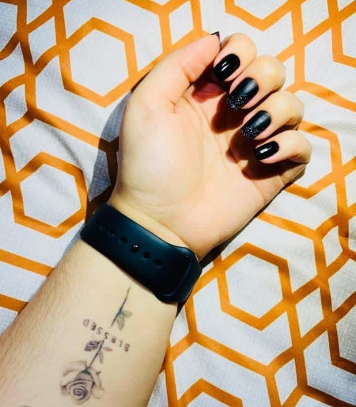
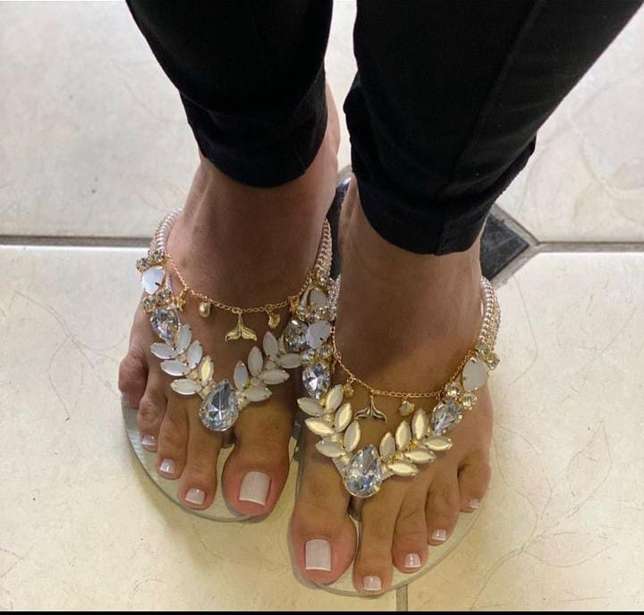
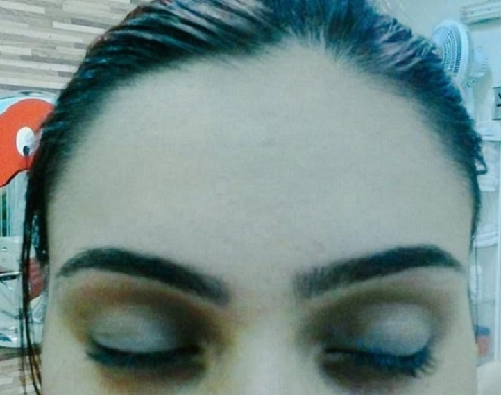

Desde os 13 anos trabalhando como manicure e pedicure. Faço unhas
do jeito que cada cliente gosta, com brilho, várias cores, o que desejar!

Formada à 8 anos pelo Senac, podologia é minha paixão. Os cuidados
com os pés são essenciais para uma vida saúdavel, venha marcar sua
consulta!

Também trabalho com design de sobrancelhas! Modelo com rena e sem
também. Utilizo pinça, cera ou maquinha própria para as sobrancelhas.